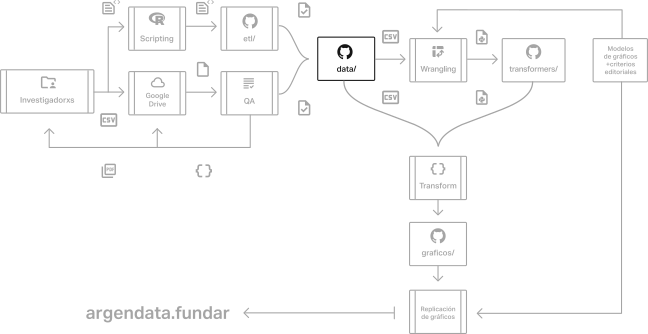

La cocina de Argendata
La cocina de Argendata
Hoja de ruta
Hoja de ruta
- Fundar
- Datos
- Nosotros =)
- Datos
- Argendata - la cocina
- Calidad de datos
- Proceso ETL
- Transformers
Fundar
La organización
Área Datos
El equipo
Área Datos - Nosotros
Nosotros
Argendata
Argendata
Datos curados por especialistas …
GitHub Argendata
GitHub Argendata
Administrados por nosotros =)
Flujo
Flujo

- CONTROL DE CALIDAD
- ARMONIZACIÓN DE PROCESOS
- TRANSPARENCIA y REPRODUCIBILIDAD
Flujo… más granular
Flujo… más granular

¡Datos abiertos!
¡Datos abiertos!
Controles de calidad
Controles de calidad
- Los datos son recolectados según lo hicieron lxs investigadorxs,
- automatizado a través de scripts en R (más sobre eso después!)
- Son ~300 fuentes de +100 instituciones distintas.
- Procesadas por distintas personas, que trabajan con distintos conocimientos y herramientas.
¿Cómo hicimos para asegurar la calidad de los datos?
Controles de calidad - Algunos problemas
Controles de calidad - Algunos problemas
- Formatos de entrada
- Variabilidad en el tipo de archivo (csv, tsv, pdf, estáticos).
- Variabilidad en el formato CSV (separador, line terminator, quoting, punto/coma decimal)
- Almacenamiento
- Google Drive
- Control de cambios (versiones)
- GitHub
- Encoding
{kind=link}
Controles de calidad - Algunos problemas
Controles de calidad - Algunos problemas
- Encoding
- UTF-8, UTF-8-BOM.
chardety compañía. - Caracteres invisibles
- Re-encoding.
- UTF-8, UTF-8-BOM.
- Nomenclatura de fuentes.
- Nomenclatura de regiones geográficas.
Controles de calidad - Haciendo zoom
Controles de calidad - Haciendo zoom
Controles de calidad - Verificadores
Controles de calidad - Verificadores
Verificaciones paralelas + resumen
import unittest
class TestStringMethods(unittest.TestCase):
def test_upper(self):
self.assertEqual('foo'.upper(), 'FOO')
def test_isupper(self):
self.assertTrue('FOO'.isupper())
self.assertFalse('Foo'.isupper())
def test_split(self):
s = 'hello world'
self.assertEqual(s.split(), ['hello', 'world'])
with self.assertRaises(TypeError):
s.split(2)
def test_fail(self):
s = 'hello world'
splitted = s.split()
self.assertEqual(len(splitted), 3)
test_fail (a.TestStringMethods.test_fail) ... FAIL
test_isupper (a.TestStringMethods.test_isupper) ... ok
test_split (a.TestStringMethods.test_split) ... ok
test_upper (a.TestStringMethods.test_upper) ... ok
========================================================
FAIL: test_fail (a.TestStringMethods.test_fail)
--------------------------------------------------------
Traceback (most recent call last):
File "test.py", line 21, in test_fail
self.assertEqual(len(splitted), 3)
AssertionError: 2 != 3
--------------------------------------------------------
Ran 4 tests in 0.001s
FAILED (failures=1)Controles de calidad - Verificadores
Controles de calidad - Verificadores
Verificaciones secuenciales + resumen
from argendata.qa import Verifica
@Verifica["Archivo"]
class ControlCSV:
a_verificar: str
def __init__(self, path: str):
self.a_verificar = path
def verificacion_encoding(self, a_verificar: str):
codecs = get_codecs(a_verificar)
if len(codecs) > 0:
self.codec = codecs[0][0]
else:
self.log.debug(...)
self.codec = use_chardet(a_verificar)
if self.codec is None:
self.codec = 'utf-8'
return self.codecETL & Scripting
ETL & Scripting
Normalización del formato de datos: el problema
Normalización del formato de datos: el problema
Veámoslo con un ejemplo. Tomemos el siguiente gráfico:
Normalización del formato de datos: el problema
Normalización del formato de datos: el problema
Su ficha en data/ es la siguiente:
Y así se ve el .csv original
(no entra en pantalla)
Normalización del formato de datos: el problema
Normalización del formato de datos: el problema
Y de alguna manera, ésto …
… se convierte en ésto:
Normalización de la normalización
Normalización de la normalización
El código queda así =) ¿Cuáles fueron los pasos de la transformación?
¿Por qué no un standalone?
¿Por qué no un standalone?
Ejemplo de un do-file de Stata.
Lenguaje específico para transformar datasets; “pre-alpha” de transformers.
La clave es la familiaridad
La clave es la familiaridad